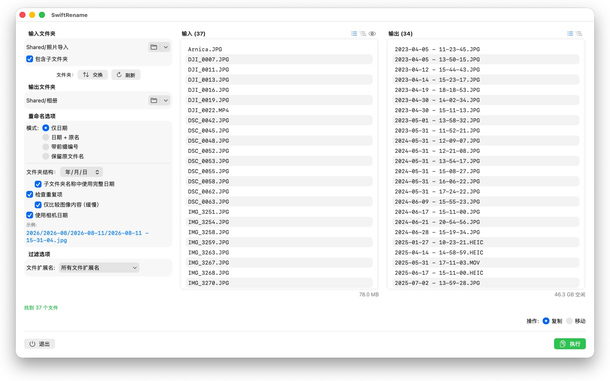
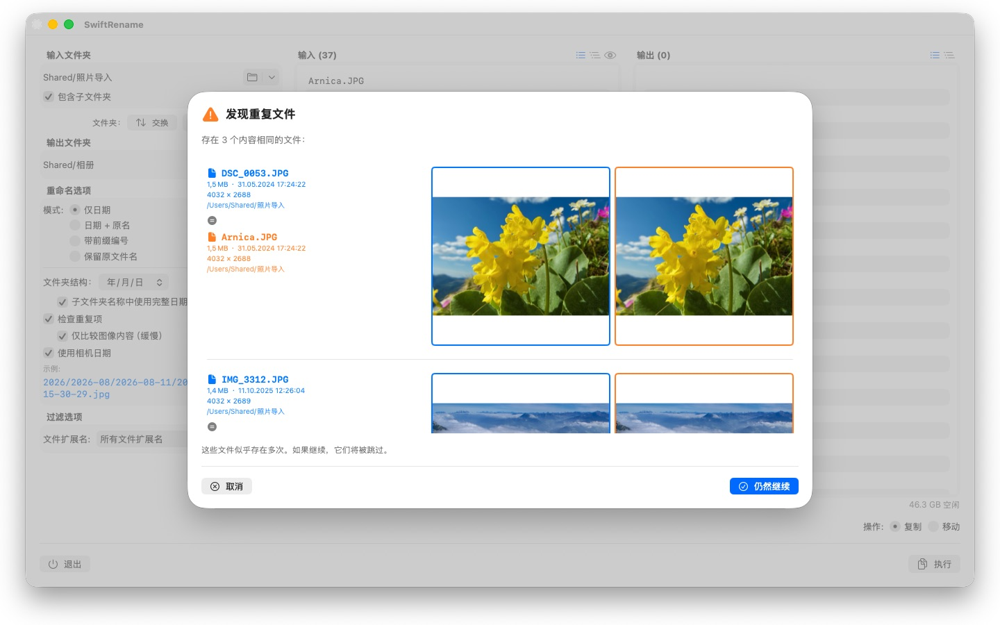

一次性重命名数百张照片和文件——按拍摄日期、连续编号，或整理到年份和月份文件夹中。重复文件会被自动识别并跳过。



SwiftRename 是一款在 Mac 上批量重命名、复制和移动文件的强大工具。选择一个文件夹，决定新名称的样式，查看实时预览——然后执行。
24 种语言：Deutsch · English · Español · Français · Italiano · Nederlands · Português · Svenska · Norsk · Suomi · Polski · Čeština · Hrvatski · Magyar · Română · Türkçe · Русский · Українська · فارسی · ไทย · 日本語 · 한국어 · 简体中文 · 繁體中文
重命名模式
- 仅日期：以文件的日期命名（例如 2024-01-15 - 14-30-00）
- 日期 + 原名：在原名称前加上日期
- 带前缀编号：使用您自定义的前缀连续编号（例如 旅行_0001）
- 保留原文件名：不改动名称，只将文件整理到文件夹中
文件夹结构
按年、月或日自动将文件整理到文件夹中——如果您愿意，还可让每个子文件夹名称都包含完整日期（例如 2026/2026-02/2026-02-20）。跨越多个年代的文件会另外获得对应的年代文件夹。或者选择“保留”，将源文件夹的子文件夹层级原样镜像到目标位置。
相机日期
照片和视频会以其真实拍摄的时刻命名：SwiftRename 会读取相机日期（EXIF）——支持各大相机厂商的 RAW 格式（佳能、尼康、索尼、富士等众多品牌），以及 HEIC、JPEG、PNG、TIFF 和常见视频格式。如果某个文件没有相机日期，则改用其创建日期。
重复文件检测
重复文件按文件大小和内容识别——与创建日期无关，因此即使同一张照片带有不同的时间戳，也无法蒙混过关。可选的图像比对甚至能找出被其他 App 重新保存过的照片。缩略图预览让您可以将两个文件并排比较；重复文件会被自动跳过。
更多功能
- 一键复制或移动——包括在同一文件夹内就地重命名
- 快速访问最近使用的输入和输出文件夹
- 包含子文件夹；以平铺列表或文件夹树形视图查看文件
- 通过多选筛选文件扩展名
- 在改动任何文件之前实时预览新名称
- 对整个操作进行撤销和重做（Cmd+Z）
- 带文件名和百分比的进度显示——可随时取消
- 操作开始前会检查磁盘可用空间
- 直接从访达拖放文件夹
一切都保留在您的 Mac 上。没有网络连接，没有账户，不收集任何数据。
- 需要 macOS 12 或更高版本
- 支持 24 种语言
- 技术支持： SwiftAppsBavaria@gmx.net
更多 App
sCollectPlay Lite
sCollectPlay 的精简版：直接打开文件夹、iTunes XML 或 sCollect 媒体库，播放其中的音乐、电影、有声书和播客——支持播放列表、音轨和字幕轨道、慢动作播放和逐帧步进。一次只能打开一个来源。分栏浏览器、自定义播放列表和最近使用的来源列表仅限完整版。
sName2Date Lite
每次处理一个文件的版本：把文件名中的日期作为拍摄日期写入照片、视频或录音，手动设置日期，把名称改为 ISO 格式，并可用 ⌘Z 撤销全部操作——功能与 sName2Date 相同，只是不能处理整个文件夹。
sBikeBridge
分析骑行记录，无需上传到任何平台：读取任何以此格式记录的码表所生成的 FIT 文件，以及 GPX 和 TCX。骑行记录保存在 Mac 上的独立资料库中——包含地图、功率和心率、照片和备注；导入时会识别重复项。按年或按月的统计数据，以及按距离、爬升高度和时长的筛选，让骑行记录便于比较。地图也可按需离线使用。